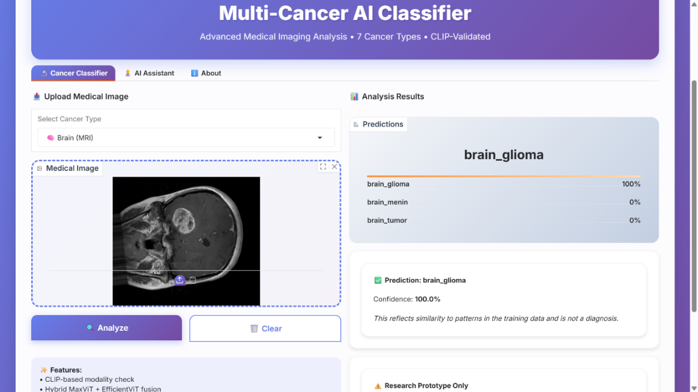
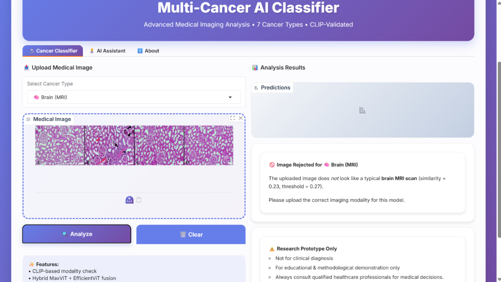
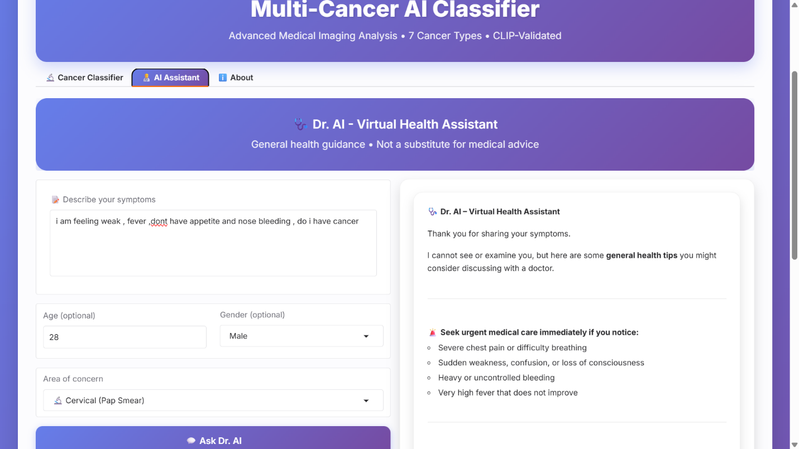

7 Cancer Types Classification



Multi-class medical image classification system for analyzing various cancer types from medical images. Designed for potential clinical deployment with interpretable results.
Python · TensorFlow · CNN · Grad-CAM · Hugging Face